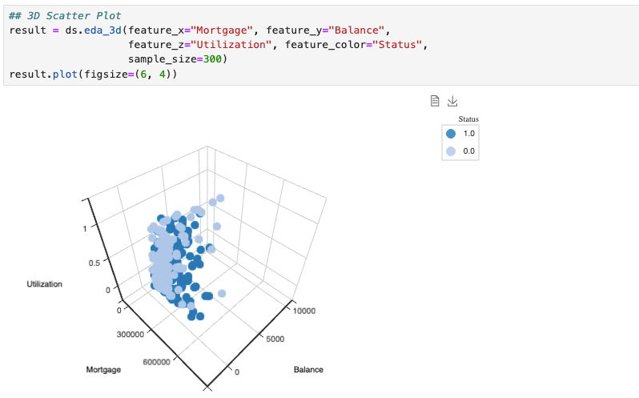
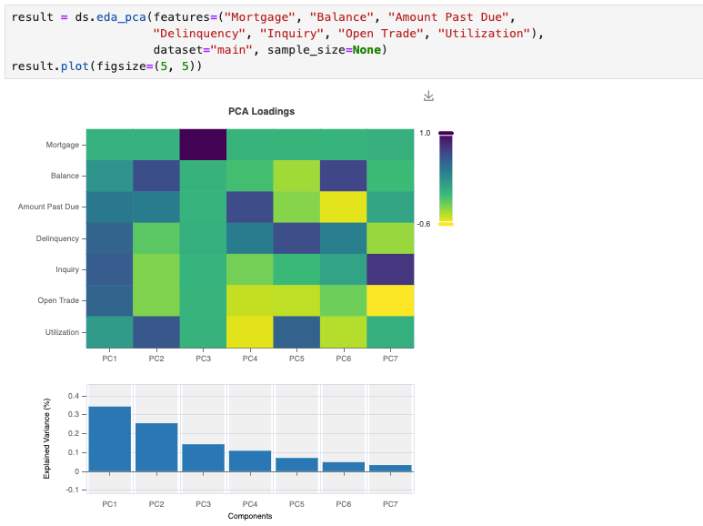

Exploratory Data Analysis#
The exploratory data analysis (EDA) capabilities in Modeva offer a comprehensive suite of tools to understand the features, distributions, and relationships. The DataSet class provides functionality to generate one-dimensional (1D), two-dimensional (2D), and three-dimensional (3D) plots, and multivariate correlation and PCA plots.
DataSet.eda_1d: Generate univariate plots for each feature in the dataset.
DataSet.eda_2d: Generate bivariate plots for each pair of features in the dataset.
DataSet.eda_3d: Generate a 3D scatter plot for three features in the dataset.
DataSet.eda_correlation: Generate a correlation heatmap.
DataSet.eda_pca: Generate a PCA plot.
Univariate (1D) Plots#
Run DataSet.eda_1d to generate univariate plots depending on the feature type.
A categorical feature is always plotted with a bar chart
A numerical feature can be plotted with {density, histogram} plot types.
{kind=link}
Bivariate (2D) Plots#
Run DataSet.eda_2d to generate bivariate plots for each pair of features:
2D scatter plot for two numerical features.
Stacked bar plot for two categorical features.
Side-by-side box plot for one numerical and one categorical feature.
{kind=link}
3D Scatter Plot#
Run DataSet.eda_3d to generate an interactive 3D scatter plot for exploring relationships of three features, with an optional fourth feature represented by the color annotation.
{kind=link}
Correlation Heatmap#
Run DataSet.eda_correlation to generate a correlation heatmap for numerical features. The correlation heatmap shows the pairwise correlation between features in the dataset. It supports four correlation methods:
pearson: Pearson correlation measures the linear relationship between two continuous variables. Its value ranges from −1 (perfect negative linear relationship) to 1 (perfect positive linear relationship), with 0 indicating no linear correlation. It is sensitive to linear relationships but not to nonlinear patterns.
spearman: Spearman correlation assesses the strength and direction of a monotonic relationship between two variables, based on their ranks. It ranges from −1 to 1, where 1 indicates a perfect increasing monotonic relationship and −1 a perfect decreasing one. It is robust to outliers and can capture non-linear relationships.
kendall: Kendall Tau measures the association between two ranked variables, focusing on the consistency of the order between them. Its value ranges from −1 (perfect discordance) to 1 (perfect concordance). It is particularly useful for ordinal data and is robust to outliers.
xicor: XiCor detects both linear and nonlinear dependencies between continuous variables. It typically ranges from 0 (no dependence) to 1 (strong dependence), providing a more comprehensive view of relationships. Negative XI correlation does not have any innate significance, other than close to zero. See details in the paper [Chatterjee2021].
{kind=link}
PCA Plot#
Run DataSet.eda_pca to generate a PCA plot for multiple features in the dataset. It shows the dimensionality reduction to principal components, visualized through loadings and explained variance.
{kind=link}